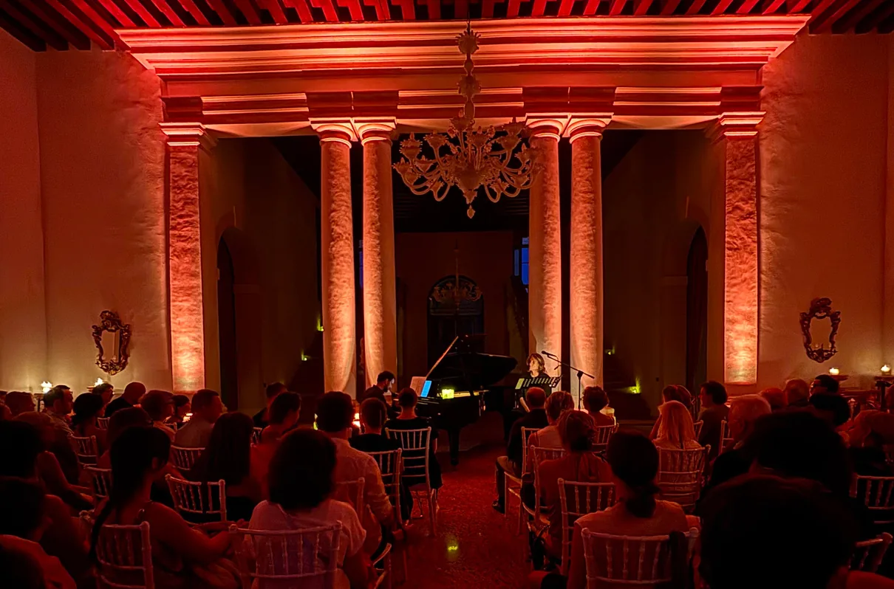
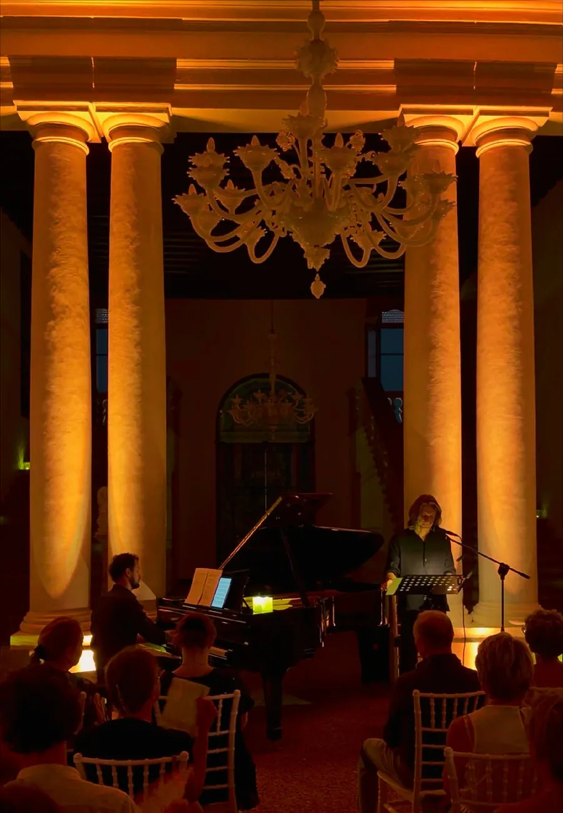
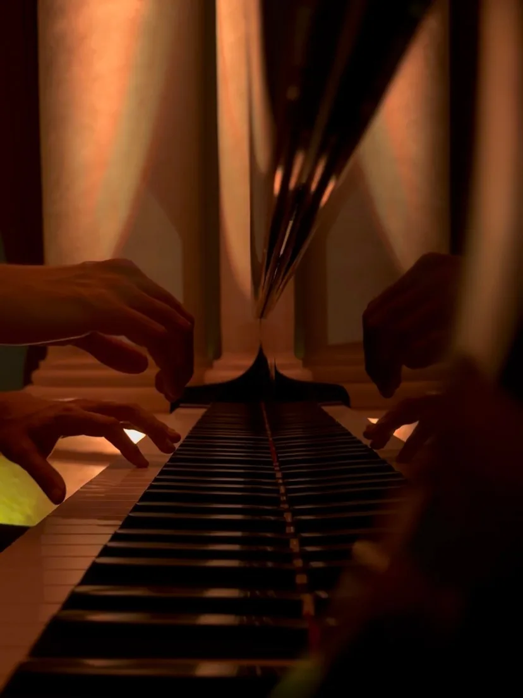
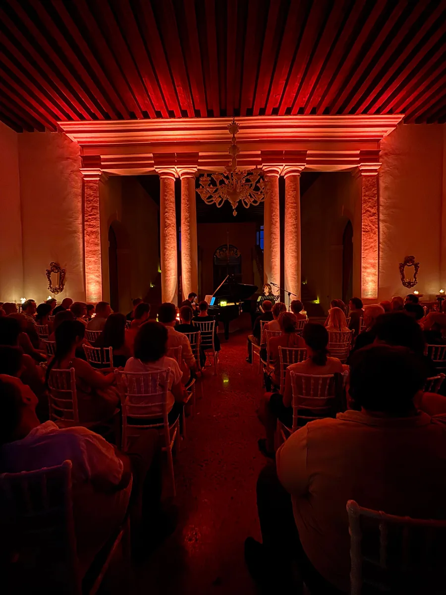
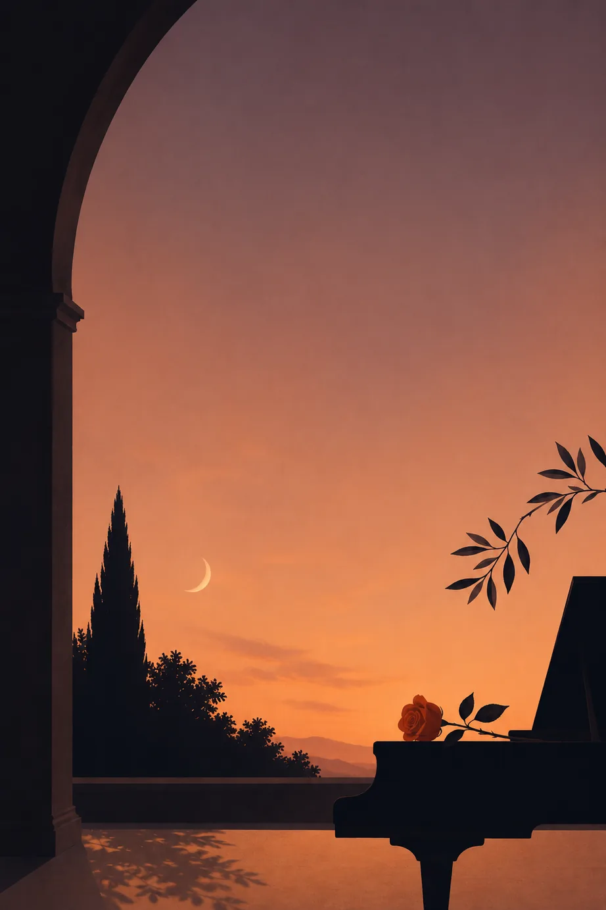
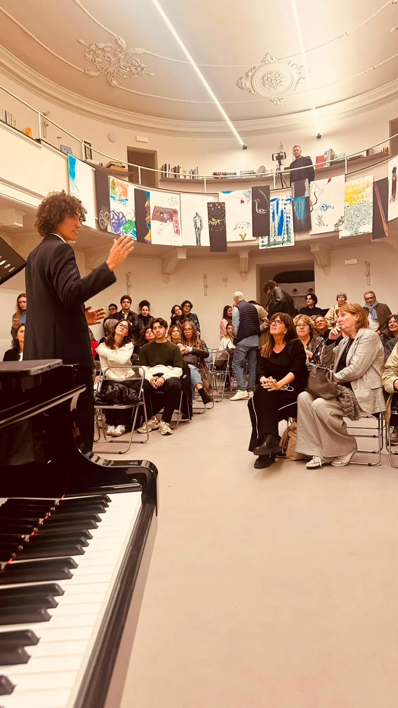

Musica, poesia e teatro
Uno spettacolo immersivo, un momento di ascolto e raccoglimento intorno a uno dei sentimenti più universali e profondi dell'esperienza umana.
In un'atmosfera intima la voce dell'attore Alessandro Alfonsi attraversa testi poetici e letterari dedicati all'amore.
Il pianoforte di Nicola Elias Rigato dialoga con la parola attraverso il grande repertorio romantico, le colonne sonore e il jazz, intrecciando i brani attraverso improvvisazione, citazioni e incroci tra generi.
Tre brevi guide all'ascolto conducono inoltre il pubblico dentro i meccanismi che rendono la musica capace di emozionare, trasformando lo spettacolo in un'esperienza accessibile e coinvolgente anche per chi non possiede una formazione musicale.
Desiderio, meraviglia, conoscenza, unità, eros, cura e ricerca di sé: queste le tappe del viaggio letterario proposto. Una serata per tornare ad ascoltare e ad ascoltarsi.




Fotografie: IANUA.
Testi tratti da Platone, Jalal al-Din Rumi, Giacomo Leopardi, Dante, Chandra Livia Candiani, Andrea Marcolongo, Wystan Hugh Auden, Rainer Maria Rilke, Massimo Recalcati, Alessandro Baricco e Nicola Elias Rigato.
Due artisti del collettivo, sulla stessa scena: la parola e il pianoforte.
Alessandro Alfonsi, voce recitante. Attore, musicista, compositore ed educatore, la sua ricerca nasce dall'incontro tra parola, corpo e musica: il suono non accompagna la scena, ne diventa parte. Formatosi al Conservatorio Venezze, ha collaborato con il Teatro del Lemming; è tra i fondatori degli Psycodrummers, con cui ha lavorato con Giorgia, Achille Lauro e Levante, e ideatore di Sonic Poets.
Nicola Elias Rigato, pianoforte e arrangiamenti. Pianista, compositore e ricercatore musicale, diplomato con lode e menzione d'onore in Pianoforte, Composizione e Musica da Camera, è pubblicato da Universal Edition e ha inciso quattro album di musica originale. Fondatore del collettivo IANUA, è autore del metodo pianistico La Mano, La Mente, Il Cuore.
